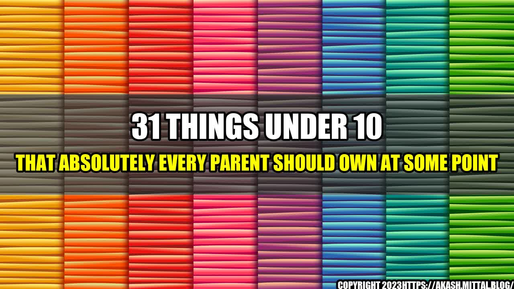

31 Things Under 10 That Absolutely Every Parent Should Own At Some Point

As a parent, finding the right products for your kids can be overwhelming and expensive. It seems like everything for kids comes with a hefty price tag, and with so many choices on the market, it can be difficult to determine which products are essential and which ones are just nice to have.
But fear not, because we've compiled a list of 31 things under $10 that every parent should own at some point. From sippy cups to baby wipes, these budget-friendly must-haves will make your life as a parent easier and more enjoyable, without breaking the bank.
But before we dive in, let's look at some quantifiable examples of how these products can make a difference:

You can never have too many baby wipes on hand, and these ones are extra gentle and fragrance-free.

This spill-proof sippy cup is perfect for on-the-go drinking, and the fun design will make your child smile.

These BPA-free pacifiers have a unique design that mimics the shape of a breast, making them more comfortable for babies to use.

Trimming a baby's nails can be nerve-wracking, but these soft-touch clippers make it easier and safer.

These textured silicone teethers can help soothe sore gums and keep babies entertained.

Prevent and treat diaper rash with this hypoallergenic, fragrance-free cream that contains zinc oxide.

These soft, breathable blankets are perfect for swaddling, as burp cloths, or as an extra layer of warmth in the stroller or car seat.

Make bath time fun and educational with these colorful letters and numbers that stick to the side of the tub.

Keep bath toys organized and dry with this durable mesh bag that attaches to the side of the tub.

Keep your baby's delicate skin and hair clean and moisturized with this hypoallergenic, tear-free formula.

Clean all those hard-to-reach spots in baby bottles, sippy cups, and breast pump parts with this durable brush.

These soft, absorbent cloths are essential for catching spit-up and drool, and can also double as a cleaning cloth.

Get a quick and accurate temperature reading with this no-touch forehead thermometer.

These spill-proof cups are perfect for snacks on the go, and their stackable design makes them easy to store.

Make bath time more comfortable for you and your knees with this thick foam kneeler and elbow rest.

Combat dry air and stuffy noses with this ultrasonic cool mist humidifier that runs up to 10 hours on one tank of water.

Keep curious little hands away from electrical outlets with these easy-to-install outlet covers.

Store and dispense baby wipes on the go with this convenient travel case that fits in your diaper bag or purse.

Help your child transition from a diaper to using the toilet with this comfortable and easy-to-clean potty seat.

Never lose a toy or pacifier again with this handy leash that attaches to strollers, car seats, and more.

Protect delicate baby clothes and keep them organized in the wash with these durable mesh bags.

Provide healthy, homemade snacks on
Curated by Team Akash.Mittal.Blog
Share on Twitter Share on LinkedIn